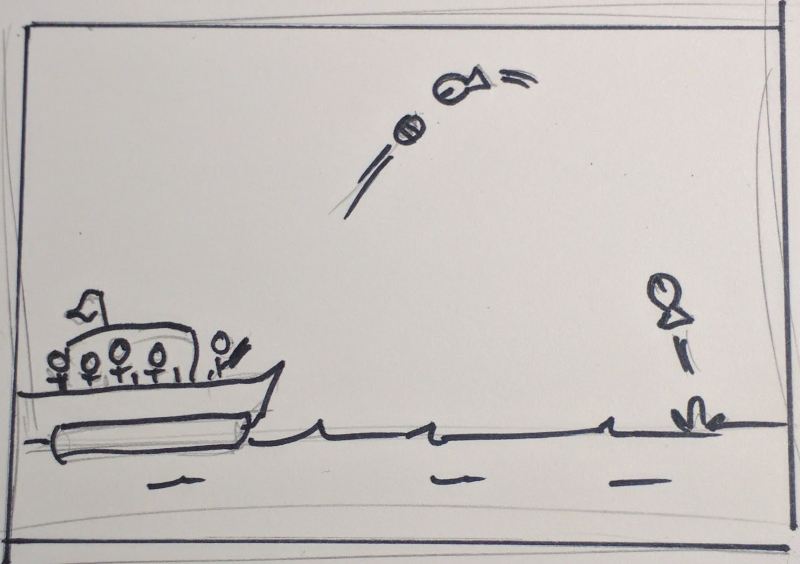

Side-scrolling shooter where the player defends their party boat from airborne piranhas.
By: squalrus
A pontoon boat filled with partying twenty-somethings is cruising down a river. The boat includes men and women in bathing suits, a keg of beer, inner tubes, a radio playing party music, and one rad dude at the bow of the boat with a t-shirt cannon.
Suddenly the partygoers find themselves in trouble as piranhas start jumping out of the water flying toward the boat. Thinking on his feet, the rad dude takes aim with the t-shirt cannon and starts firing t-shirts at the oncoming piranhas. Every piranha hit with a t-shirt becomes wrapped in one and falls back into the water.
The party boat continues down the river in an attempt to escape the never-ending barrage of fish, but how long can they fend them off?

Depicts the scene of a party boat cruising down a river with the game title and a "click to start" text.
As an homage to Grand Theft Auto, once the party boat hits 0% health, the screen shows "wasted". The score will be recapped on a stats screen and the player will be brought back to the title screen.
As piranhas fly out of the water at varying arcs and velocities, the player takes aim by tapping in the direction the t-shirt cannon will fire.
The user must manage their t-shirt inventory and overall boat health while trying to get the highest score by hitting the most piranhas, getting combos, and landing multipliers (same piranha, multiple t-shirts).
The 2D assets list for PBP that are located in /Unity/Assets/Art. Any STRETCH
indicates
that an asset is not strictly required for v1.0, based on time, availability, and complexity.
During design the assets are being managed in Dropbox.
piranha.png : The primary antagonist of PBP. A blood-thirsty piranha, modeled after the
red-bellied
piranha, that has both a closed and open mouth state in a single sprite sheet.piranha_alt.png : STRETCH An alternate version of the main piranha.piranha_shirt.png : The main piranha, but a bit dazed and wearing one of the t-shirts that
has been
fired at it.boat.png : The party boat the player is riding on. This boat has several beverages strewn
about,
covered with party-goers, and has a protagonist that holds the t-shirt cannon.boat_life_25.png : STRETCH Same boat, but after taking damage that
represents 25%
health. The hull has taken more severe damaged and some of the people on the boat have now become
bloody.boat_life_50.png : Same boat, but after taking damage that represents 50% health. The hull
is
damaged and some of the people on the boat have become bruised.background_back.png : The parallax background back layer. Darker in color, silhouettes
mostly of
trees and environment.background_fore.png : STRETCH The parallax foreground layer. Blurred
vegetation
that gives an even further level of depth.background_front.png : The parallax background front layer. Tree line, bank, and water --
primary
environment layer in vivid detail.background_mid.png : The parallax background middle layer. Less feature-rich environment
with some
level of noticeable detail.cannon.png : The t-shirt cannon held by the player that can move/rotate independently of
the
player.shirt_bundle.png : A bundle of t-shirts that can be collected as ammunition.shirt_single.png : The single t-shirt that is fired out of the t-shirt cannon.splash_boat.png : STRETCH Splashing water that would be caused by the
boat.
Alternatively the boat asset could be a sprite and have the splashing built into the animation of the
boat.splash_generic.png : STRETCH A generic splash animation in the form of a
sprite
that could be used for items entering/exiting the water.